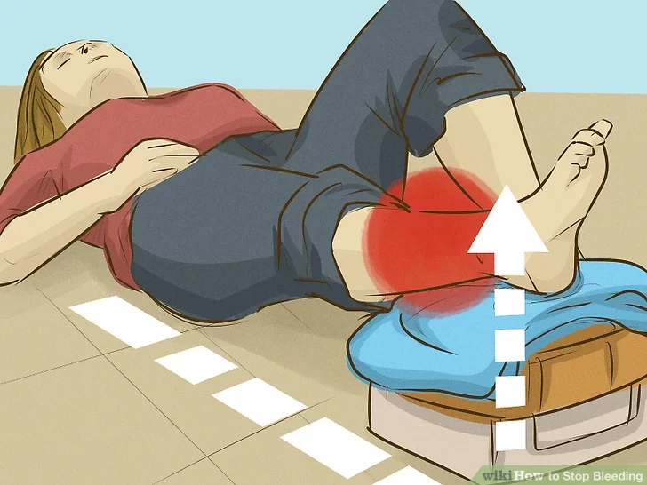
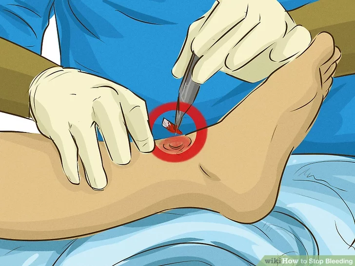
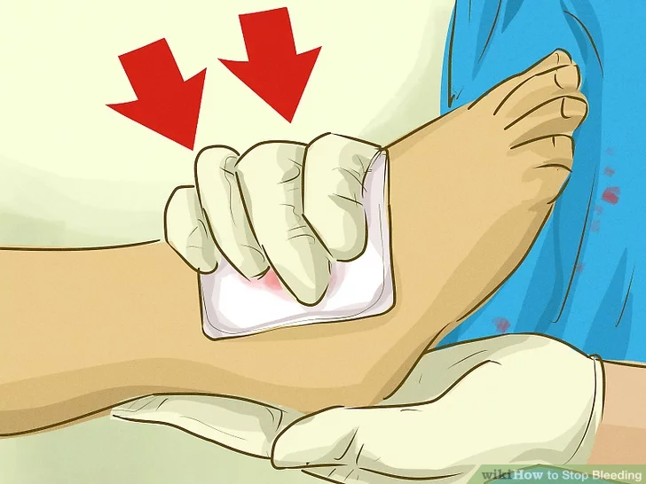
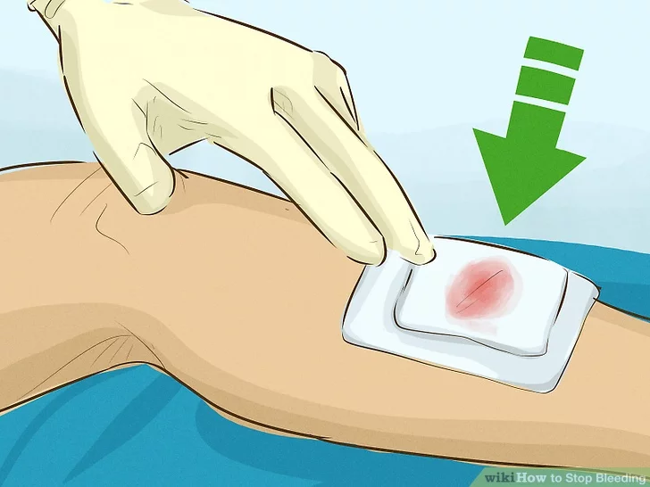
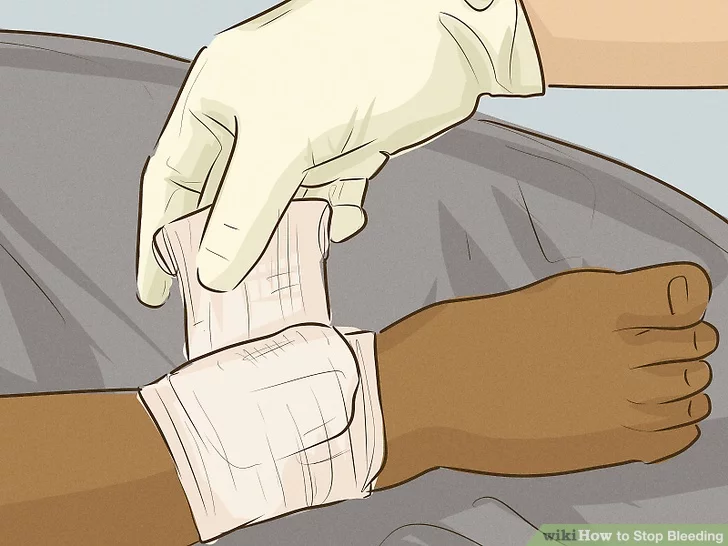
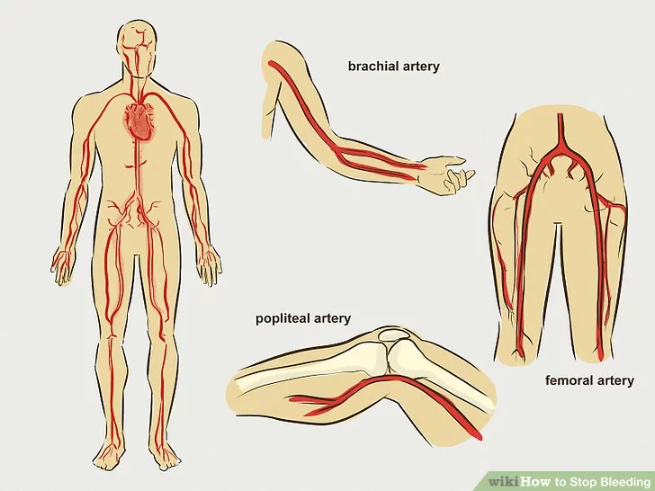
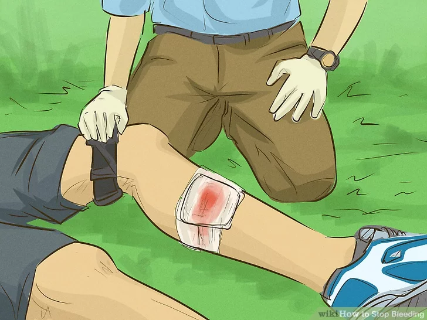

Step 1: Lie down.
Step 2: Elevate a wounded limb.
Step 3: Remove any debris from the wound.
Step 4: Apply firm pressure directly to the wound until the bleeding stops.
Step 5: Apply pressure steadily.
Step 6: Look for seepage from the wound.
Step 7: Use pressure points, if necessary.
Step 8: Continue applying pressure until the bleeding stops or help arrives.